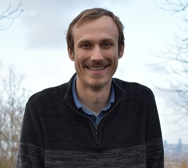

Stephen E. Ogier
I'm a MRI Systems Engineer. I'm presently a research associate at King's College London. I did my PhD in the Magnetic Resonance Systems Lab at Texas A&M University.
My interests include developing novel add-on systems to increase the capabilities of existing MRI scanners and developing low-cost standalone MR systems. I've built the occasional coil or array, but I've been fortunate to work with very tallented colleagues who truly make an art out of building coils.
I also write occasional posts for Hackaday.
Contact
Twitter
LinkedIn
GitHub
Selected Publications:
- M. Wilcox, S.E. Ogier, S. Cheshkov, I. E. Dimitrov, C. Malloy, S.M. Wright, M.P. McDougall, "A 16-Channel 13C Array Coil for Magnetic Resonance of the Breast at 7T," in IEEE Transactions on Biomedical Engineering, 2021, doi: 10.1109/tbme.2021.3063061
- R. Del Bosque, J. Cui, S.E. Ogier, S. Cheshkov, I. E. Dimitrov, C. Malloy, S.M. Wright, M.P. McDougall, "A 32-Channel Receive Array Coil for Bilateral Breast Imaging and Spectroscopy at 7T," in Magnetic Resonance in Medicine, 2021, doi: doi.org/10.1002/mrm.28425
- S.E. Ogier, M. Wilcox, S. Cheshkov, I. E. Dimitrov, C. Malloy, M.P. McDougall, S.M. Wright, "A Frequency Translation System for Multi-Channel, Multi-Nuclear MR Spectroscopy," in IEEE Transactions on Biomedical Engineering, 2020, doi: 10.1109/TBME.2020.2997770
- S.E. Ogier, M. Wilcox, S. Cheshkov, I. E. Dimitrov, C. Malloy, M.P. McDougall, S.M. Wright, “A System for 16-Channel 13C Magnetic Resonance Spectroscopy Data Acquisition at 7T,” International Society for Magnetic Resonance in Medicine Annual Meeting 2019
- S.E. Ogier, J. Bosshard, S.M. Wright, “A Broadband Spectrometer for Simultaneous Multinuclear Magnetic Resonance Imaging and Spectroscopy,” International Society for Magnetic Resonance in Medicine Annual Meeting 2016
Resources
Small projects I put together for educational purposes that others may find useful. These are all published under the MIT License.
- Basic Assembler - a basic assembler written for a minimal assembly language. Developed in Python using the textX module.
- 1D FDTD - a simple Python FDTD implementation that allows for the simulation of the interactions of a linearly polarized plane wave with dielectric slabs. Includes demonstrations of common transmission line phenomena.